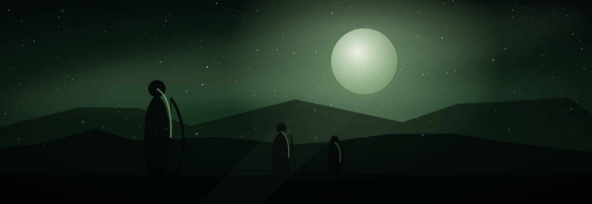

02 / TALENTS
天赋EACH TALENT IS A CARD
一个英雄有多张天赋，一套卡组只带一张——所以下面的玩法，其实是「选哪一张」。

吹笛人、荆棘王冠、与风同在——三张 0–1 行动花费的小个子，条件是累计使用三张御风后觉醒。她不是一个人在打，是一支会自己长大的小队；苍叶与树人替她站在场上，也替她挡刀。
她把自己的血条当资源：专属魔法的代价，全是扣取她当前的防御力。觉醒面板把代价抹掉（专属魔法不再扣防御力），并把每次御风变成一次额外的 100 点物理伤害——先透支，后解放。
御风五张，代价全是「扣取伊芙格林当前防御力」。
一个英雄有多张天赋，一套卡组只带一张——所以下面的玩法，其实是「选哪一张」。
共 17 张，其中天赋 3 张。
这张星图只画与伊芙格林相关的 17 张卡。悬停任一节点，与它相连的线会亮起；点进去就是单卡页。
连线取自卡牌文本中的明确指涉（生成、转化、检索、条件、同源、联动）。没有连线的卡不代表无关，只代表它们的关系还没被写进文本里。
打开完整图鉴